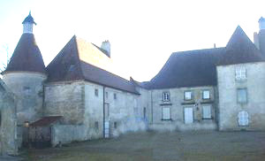
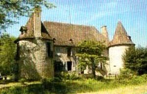
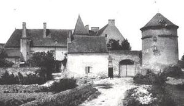
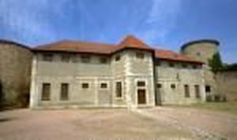
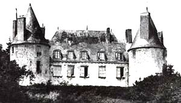

Recensement Jean-Claude Truffet
| Département | 03 — Allier |
| Canton | Gannat |
| Commune | Gannat |
| Type d'édifice | Château |
| Période d'origine | XVI |





CAVILLONS, les premiers propriétaires sont pas connus, à moins qu'il ne s'agisse d'une famille de Cavillons. CHAZOUX, en 1248, le fief existe, mais ne semble pas encore bâti, puisque les deux frères, Pierre et Stéphane Cellerier, confessent tenir seulement la terre de Chazoux. La maison-forte de Chazoux existait donc, déjà, au milieu du XVe siècle. En 1499 c'est Jean Terris d'une famille bourgeoise de Gannat, qui possède la terre de Chazoux avant 1530, la famille porte le nom de la terre comme patronyme. Les héritiers de feu Jehan Terris, probablement celui de 1499, possèdent, dans leur fief de Chazoux, une maison et un moulin à Gannat, avec une tour en fer à cheval de l'enceinte, dite tour Terris et qui, actuellement porte le nom de Calixte Loulin. Au milieu du XVIIe siècle la terre de Chazoux est aux mains de la famille Faure, dont Pierre Faure, écuyer, est sieur de la Combe et de Chazoux. Sa femme, demoiselle Marie de Lormet de Valignat, veuve en 1653, demeurait à Chazoux. Leur fille, Charlotte Faure de Chazoux, mariée une première fois à François Champagnat, porte la terre de Chazoux à son mari en seconde noce, Gaspard du Peyroux, mais il devait y avoir co-seigneurie, puisqu'en 1660, l'on rencontre Pierre de Faure, écuyer, donc anobli, comme seigneur de Chazoux et de La Combe, près d'Ebreuil. Au XVIIIe siècle, la famille se pare du titre de comte et en 1761, c'est le comte Louis de Faure, écuyer, qui est seigneur des lieux. Elle franchit un pas de plus en 1789 avec le comte Louis de Faure qui est alors chevalier de l'ordre royal et militaire de Saint-+Louis.
CHIROUX Le premier seigneur mentionné de Chiroux est, en 1301, Barthélémy de Chiroux, damoiseau, qui habite alors la paroisse Sainte Croix de Gannat et qui reconnait tenir en fief du sire de Bourbon "l'estang et les molins de Chiroux".
Cavillons; proche du centre ville, la maison forte des Cavillons était installée hors les murs. Elle consiste en un grand corps de logis, de plan rectangulaire, avec pavillon d'angle carré, en retour d'équerre. A l'arrière, une haute tour circulaire contient l'escalier, qui dessert l'étage et le niveau de comble. Des transformations du XVIIIe siècle ont ouvert des fenêtres à encadrement de pierre. Des communs importants s'organisent autour d'une tour fermée, dont l'accès est possible par un grand portail. Chiroux, les constructions de l'ancien château ont aujourd'hui disparus, mais d'après les ruines qui existaient encore au XXe siècle, le château semble avoir été considérable et portait un énorme donjon. Il ne parait donc pas y avoir, à cette époque, de château, à moins qu'il n'y ai eu une co-seigneurie, non signalée. Il s'agit alors d'une tour habitable, grange, maisons, étangs et moulins. Une seule tour est mentionnée, elle était de forme hexagonale, édifiée au XVe siècle, par la famille Chiroux, ce qui laisse penser à une maison forte qui aurait remplacé l'ancienne forteresse devenue inutilisable. L'enceinte était entourée de profonds fossés. Frappé par la foudre, le château fut incendié et détruit en juillet 1828.
Chazoux, il ne reste de cette maison-forte du XVe siècle, de plan rectangulaire, protégée par une enceinte, qu'une tour ronde, rasée au niveau du premier étage et recouverte d'un toit incliné à une seule pente.
Ffamille de Cavillon. Famille de Pierre de Faure"
Château de Cavillons, de Chiroux, de Chazoux, de Fauléonnières et de Langlard à Gannat